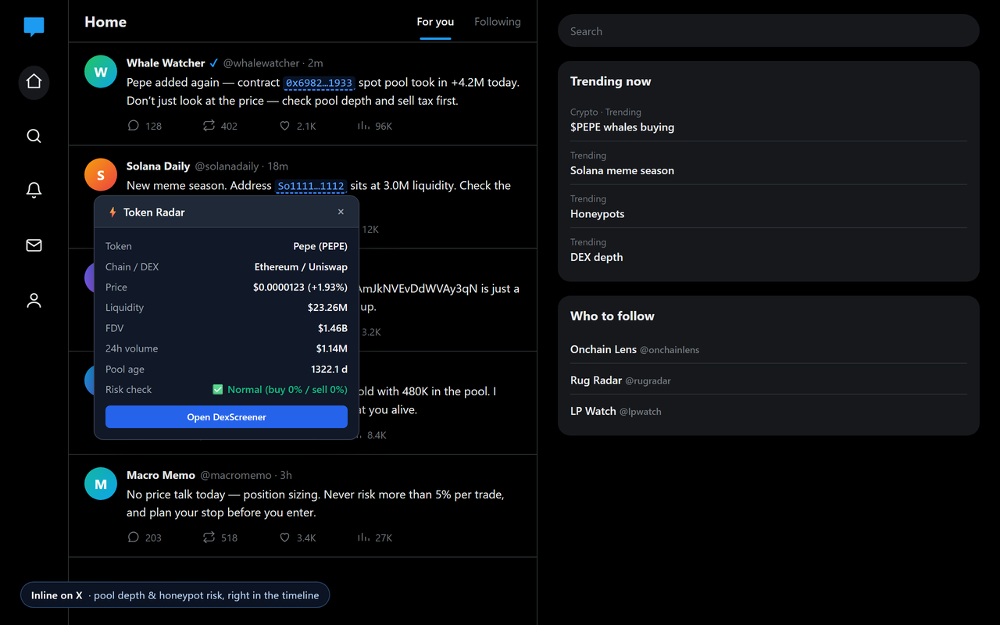

Token
Token See the pool depth and honeypot risk before you ape.
Token Radar lives inside X. Every EVM or Solana contract address in a post gets a quiet highlight — click it and a card opens with live price, liquidity, 24h volume, pool age, sell tax and honeypot status.

Three things most scanners get wrong
They are exactly the three things that decide whether your money survives.
Deepest pool, not the first one
A token can have 30 pairs. The shallow one says "high risk", the deep one says "fine" — and naive lookups return the shallow one. Token Radar sorts by liquidity.
Risk in the same card
Honeypot simulation and buy/sell tax come back with the price. No second tab, no copying the address into a checker.
Nothing to sign up for
No account, no wallet connection, no analytics. Two public read-only APIs and zero Chrome permissions beyond the sites it reads.
Install in 30 seconds
Currently distributed as an unpacked extension (Chrome Web Store listing in progress).
- Download and unzip the extension package.
- Open
chrome://extensions/and switch on Developer mode (top right). - Click Load unpacked and pick the unzipped folder.
- Open x.com — contract addresses in posts are now highlighted in blue.